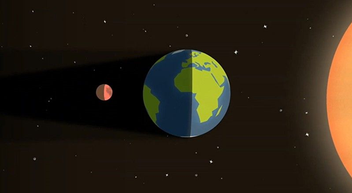
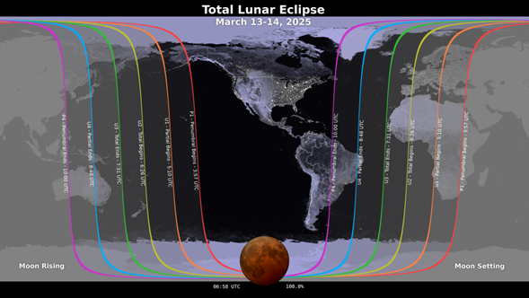

Release
RELEASE
PLANETÁRIO.
o Planetário Inflável, uma estrutura imersiva que proporciona ao público uma experiência única de observação do céu. Instalado em uma cúpula inflável com 3,2 metros de altura e 6,4 metros de diâmetro, o planetário permite a projeção de imagens que simulam o céu noturno, oferecendo uma oportunidade educativa para compreender os movimentos dos planetas e o deslocamento aparente das estrelas. Independentemente das condições climáticas externas, dentro do planetário, o céu permanece sempre límpido e visível.
Durante as sessões, os visitantes têm a chance de aprender sobre as fases da Lua, o movimento do Sol, as constelações do zodíaco e o ciclo dos dias e noites. Além disso, é possível simular o céu de qualquer data do ano, identificando suas estrelas, constelações e planetas visíveis, além de analisar as variações que ocorrem ao longo do tempo. O público também pode explorar o céu noturno de diferentes localidades ao redor do mundo, compreendendo as diferenças que surgem devido às variações de latitude.
O Planetário Inflável integra a programação do Clube de Astronomia Artemis- ABA desse 2023 (Em parceria com a STARDUST)
Além das exibições regulares , o Clube de Astronomia Artemis- ABA desenvolve o projeto "Planetário na Escola", levando o Planetário Inflável a instituições de ensino públicas e privadas. Escolas interessadas em participar podem entrar em contato com o Clube de Astronomia Artemis-ABA para mais informações.
O Planetário Inflável STARDUST também integra a programação de importantes eventos de divulgação científica, entre eles:
· PLANETÁRIO NA UNIFESP - CAMPUS DIADEMA. CERIMÔNIA DE ENTREGA DE MEDALHAS DA OBA.
· PLANETÁRIO NA ESCOLA PEI ANTONIETA BORGES ALVES - DIADEMA-SP- Culminância das eletivas.
· PLANETÁRIO NA SECRETARIA MUNICIPAL DE EDUCAÇÃO DE DIADEMA
· PLANETÁRIO NO SESC - BIRIGUI – SP
· PLANETÁRIO NO SHOPPING PRAÇA DA MOÇA – SEMANA DA ASTRONOMIA DE DIADEMA.
FUNDAÇÃO CENTRO DE ATENDIMENTO SOCIOEDUCATIVO AO ADOLESCENTE- CASA.
· Entre diversas outras iniciativas de divulgação científica e educação.
ECLIPSE LUNAR - 14 DE MARÇO - 2025.
O que você precisa saber sobre o eclipse lunar total de março de 2025
O que é um eclipse lunar?
Um eclipse lunar ocorre quando o Sol, a Terra e a Lua se alinham de modo que a Lua passa para a sombra da Terra. Em um eclipse lunar total, a Lua inteira cai dentro da parte mais escura da sombra da Terra, chamada de umbra. Quando a Lua está dentro da umbra, ela parece vermelho alaranjada. Os eclipses lunares são às vezes chamados de “Luas de Sangue” por causa desse fenômeno.
Fonte: Estúdio de Visualização Científica da NASA (uso livre)
Como posso observar o eclipse?
Você não precisa de nenhum equipamento especial para observar um eclipse lunar, embora binóculos ou um telescópio melhorem a visão. Um ambiente escuro, longe de luzes brilhantes, proporciona as melhores condições de visualização.
Eclipse será visível no Brasil
Um mapa mostrando onde o eclipse lunar de 13 a 14 de março de 2025 é visível. Os contornos marcam a borda da região de visibilidade do eclipse. O mapa mostra que o eclipse será visível do Hemisfério Ocidental da Terra, com a totalidade começando por volta das 00h57

Fonte: Estúdio de Visualização Científica da NASA (uso livre)
Início do eclipse penumbral. A Lua entra na penumbra da Terra, a parte externa da sombra. A Lua começa a escurecer, mas o efeito é bem sutil.
Início do eclipse parcial. A Lua começa a entrar na umbra da Terra e o eclipse parcial começa. A olho nu, conforme a Lua se move para dentro da umbra, parece que uma mordida está sendo tirada do disco lunar. A parte da Lua dentro da umbra parece muito escura.
A totalidade começa. A Lua inteira está agora na umbra da Terra. A Lua está tingida de um vermelho acobreado. Tente binóculos ou um telescópio para uma visão melhor. Se quiser tirar uma foto, use uma câmera em um tripé com exposições de pelo menos vários segundos.
Fim da totalidade. Conforme a Lua sai da umbra da Terra, vermelha desaparece. Parece que uma mordida está sendo tirada do lado oposto do disco lunar de antes.
Fim do eclipse parcial. A Lua inteira está na penumbra da Terra, mas, novamente, o escurecimento é sutil.
Fim do eclipse penumbral. O eclipse acabou.
Visualização de dados mostrando uma visão telescópica da Lua enquanto o eclipse lunar total de março de 2025 se desenrola. By Milton Barros.

Por que a Lua fica vermelha durante um eclipse lunar?
O mesmo fenômeno que torna nosso céu azul e nossos pores do sol vermelhos faz com que a Lua fique laranja-avermelhada durante um eclipse lunar. A luz solar parece branca, mas na verdade contém um arco-íris de componentes — e diferentes cores de luz têm diferentes propriedades físicas. A luz azul se espalha com relativa facilidade ao passar pela atmosfera da Terra. A luz avermelhada, por outro lado, viaja mais diretamente pelo ar.
Quando o Sol está alto em um dia claro, vemos luz azul espalhada por todo o céu acima. No nascer e no pôr do sol, quando o Sol está perto do horizonte, a luz solar incidente viaja por um caminho mais longo e de ângulo baixo através da atmosfera da Terra até os observadores no solo. A parte mais azul da luz solar se espalha na distância (onde ainda é dia), e apenas a parte amarela a vermelha do espectro chega aos nossos olhos.
Durante um eclipse lunar, a Lua parece vermelha ou laranja porque qualquer luz solar que não seja bloqueada pelo nosso planeta é filtrada por uma fatia grossa da atmosfera da Terra em seu caminho para a superfície lunar. É como se todos os nasceres e pores do sol do mundo fossem projetados na Lua.
A paisagem da Lua, em primeiro plano, está avermelhada. Em um céu negro, a Terra é iluminada por trás pelo Sol.
Durante um eclipse lunar total, a Lua fica avermelhada pela luz solar filtrada pela atmosfera da Terra.
Estúdio de Visualização Científica da NASA
O que mais posso observar na noite do eclipse?
Olhe para o céu ocidental na noite do eclipse para ter um vislumbre dos planetas Júpiter e Marte. A Lua estará na constelação de Leão, sob a pata traseira do leão, no início do eclipse; logo depois, ela cruzará para a constelação de Virgem. À medida que a sombra da Terra escurece o brilho da Lua, as constelações podem ser mais fáceis de avistar do que o normal.
Início do eclipse penumbral 00h57
A Lua entra na penumbra da Terra, a parte externa da sombra. A Lua começa a escurecer, mas o efeito é bem sutil.
Início do eclipse parcial 02h09
A Lua começa a entrar na umbra da Terra e o eclipse parcial começa. A olho nu, conforme a Lua se move para dentro da umbra, parece que uma mordida está sendo tirada do disco lunar. A parte da Lua dentro da umbra parece muito escura.
A totalidade começa 03h26
A Lua inteira está agora na umbra da Terra. A Lua está tingida de um vermelho acobreado. Tente binóculos ou um telescópio para uma visão melhor. Se quiser tirar uma foto, use uma câmera em um tripé com exposições de pelo menos vários segundos.
Fim da totalidade 4h31
Conforme a Lua sai da umbra da Terra, a cor vermelha desaparece. Parece que uma mordida está sendo tirada do lado oposto do disco lunar de antes.
Fim do eclipse parcial05h47
A Lua inteira está na penumbra da Terra, mas, novamente, o escurecimento é sutil.
Fim do eclipse penumbral 07h00
O eclipse acabou.
Para mais informações, entre em contato:
Responsável pela atividade:
Professor Milton Pereira
✉Email : artemisastronomia@gmail.com
📞 Telefone: +55 (11) 96918-9190